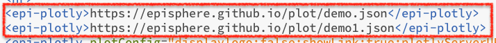
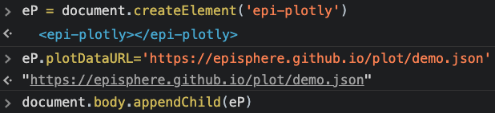
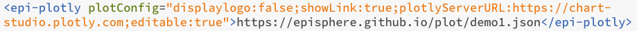
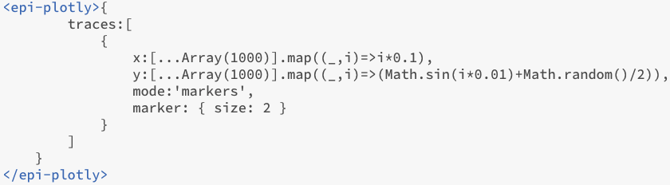

The plot below is assembled within a custom <epi-plotly> |↗| element, loaded from episphere.github.io/plotly/epiPlotly.js.
The two plots below are assembled by using this custom element just like you would any html tag, with the url to the plot data as it's content.

Also like regular HTML elements, custon elements can be manipulated by JS directly in the DOM. Note in this example how the data url can be assigned to the specific element attribute where it is kept:
As with regular HTML elements, you can also chose to provide additional parameters as attributes of the custom tag. Compare the plot below with the one above to discover what each configuration parameter is doing

For a less conventional approach, one can also pass the traces and layout directly in tag attributes. You could also go overboard (you were warned) and do something like this
